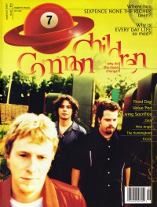

CMnexus
: Contemporary Christian culture, music, and media.
|
Common ChildrenOn the cover
September 1997
7ball | Media coverage:- Jan 1996 in 7ball "Bankshots: Common Children", by Chris Well
- Feb 1996 in HM "Common Children", by Brian Vincent McGovern
- May 1996 in CCM "Faces to Watch: Not-So-Common Music", by Bruce A. Brown
- May 1996 in Campus Life "Tell Me About It: Driver Eight, Common Children, Grammatrain, Third Day, Rob Walker"
- Sum 1996 in True Tunes News "Snapshots: Common Children"
- Sep 1997 in 7ball "Less Volume... More Intensity", by Beth Blinn
- Oct 1997 in CCM "In Concert: World Fest 3", by Scott Mathias
- Nov 1997 in HM "Life Is Short, So... Be Real!", by Brian Vincent McGovern
- Jan 1998 in HM "Concert Review: Grammatrain, Common Children, Tragedy Ann", by Brian Vincent McGovern
- Mar 1998 in HM "Hardnews: U Turn Tour"
- May 1998 in CCM "The Cure For The Common Children", by Mike Parker
- Nov 2001 in HM "The Liberation Study", by Jason E. Dodd
- Jun 2003 in CCM "Marc Byrd (Common Children), Christine Glass, Glassbyrd", by Anthony DeBarros
- Oct 2010 in Down The Line "Hammock: Chasing After Shadows", by Steve Ruff
Albums & reviews:2001: The In-between Time
Books about Common Children
- "Common Children" in The Encyclopedia of Contemporary Christian Music (Mark Allan Powell, 2002).
|
|
<>